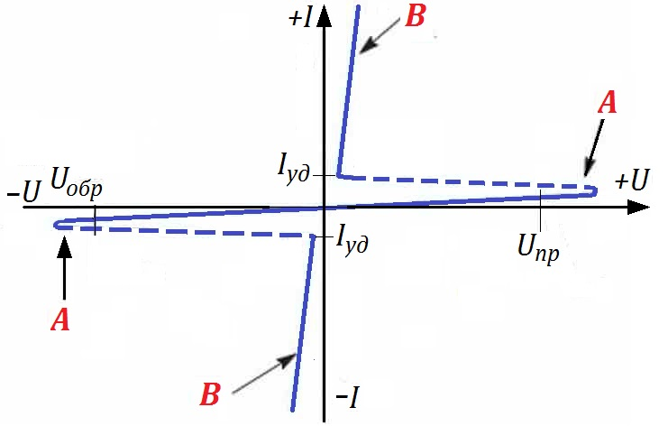
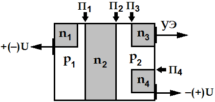
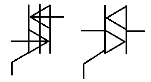
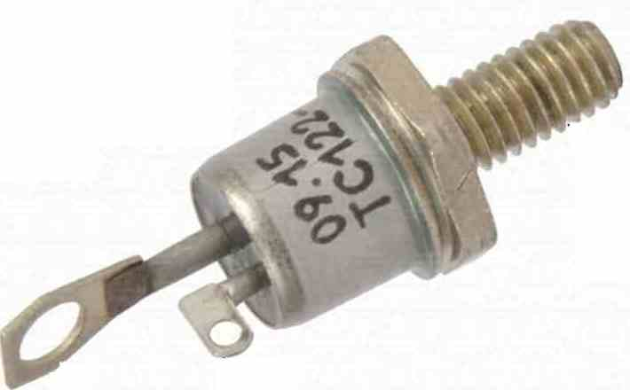

Симисторы
Симисторы (симметричный триодный тиристор, триак), в отличие от обычных тиристоров, проводят ток анод-катод при протекании тока по управляющему электроду, как в прямом направлении, так и в обратном. В результате этого их вольтамперная характеристика симметрична, что отражено на рис. 1.

А – закрытое состояние, В – открытое состояние
Таким образом, на вольтамперной характеристике каждого симистора присутствуют два участка отрицательного дифференциального сопротивления.
Структура симистора содержит пять слоёв, что отражено на рис. 2. Поскольку ток может проводиться в оба направления, обозначение силовых выводов как "анод" и "катод" не имеет смысла, потому их принято называть "силовые электроды" и обозначать, как «Т1» и «Т2» (возможны варианты ТЕ1 и ТЕ2 или А1 и А2). Управляющий электрод, как правило, обозначается «УЭ» или «G» (от английского gate).

К управляющему электроду, который отведён от зоны n3, подсоединим вывод отрицательного напряжения, полученного от источника питания, относительно вывода от зон p2, n4, в результате чего электроны из зоны n3 инжектируют в зону p2. Кроме того, приложим напряжение от источника питания положительным полюсом к зонам p1, n1, а отрицательным полюсом к зонам p2, n4. Переходы П1 и П4 открыты, и играют роль эмиттерных переходов, а переход П2 закрыт и исполняет обязанности коллекторного перехода, и через симистор по выводам анод-катод протекает ток.
Теперь поменяем полярность и приложим напряжение отрицательным полюсом к зонам p1, n1, а положительным полюсом к зонам p2, n4. Переходы П1 и П4 закрыты, и переход П1 выполняет функции коллекторного перехода, а переход П2 открыт и служит коллекторным переходом, и через симистор и в этом случае по выводам анод-катод течёт ток.


Основные характеристики симистора:
- Максимально допустимый уровень напряжения при прямом включении Uпр (UDRM).
- Максимальный уровень обратного напряжения Uобр (URRM).
- Допустимый уровень тока прямого включения Iпр (IDRM).
- Допустимый уровень тока обратного включения Iобр (IRRM).
- Ток удержания Iуд (IН).
Источники
asutpp.ru - Симисторы: принцип работы, проверка и включение, схемы